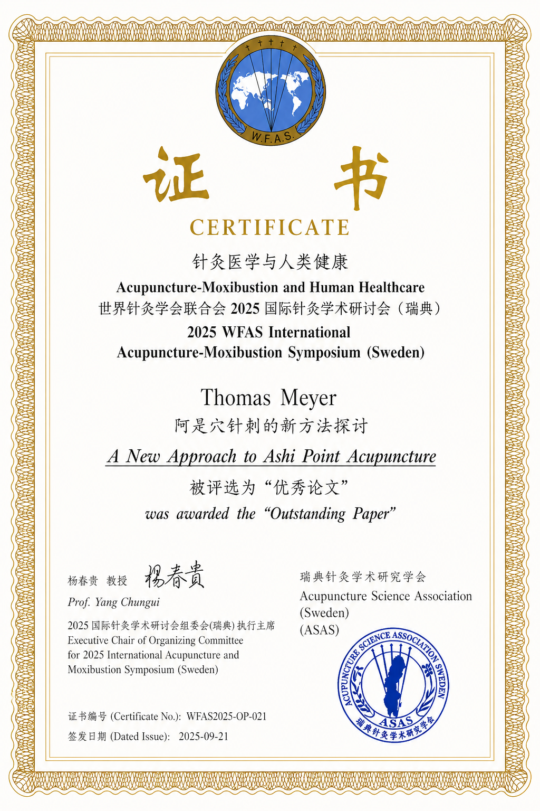
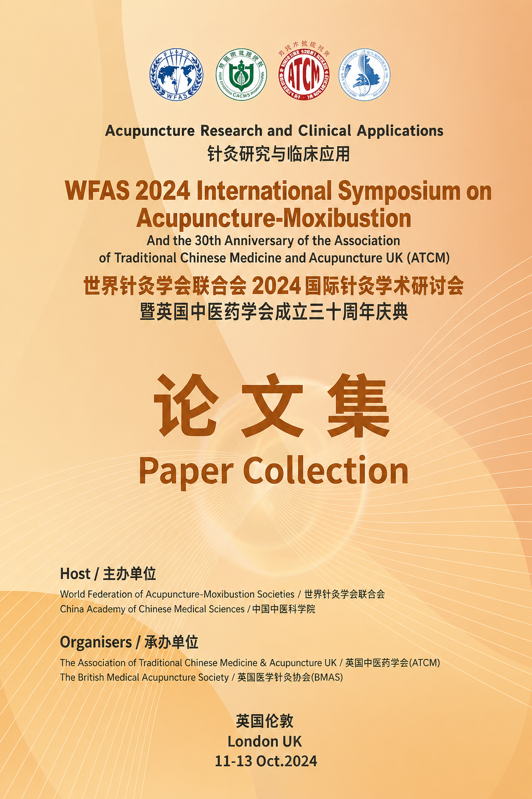
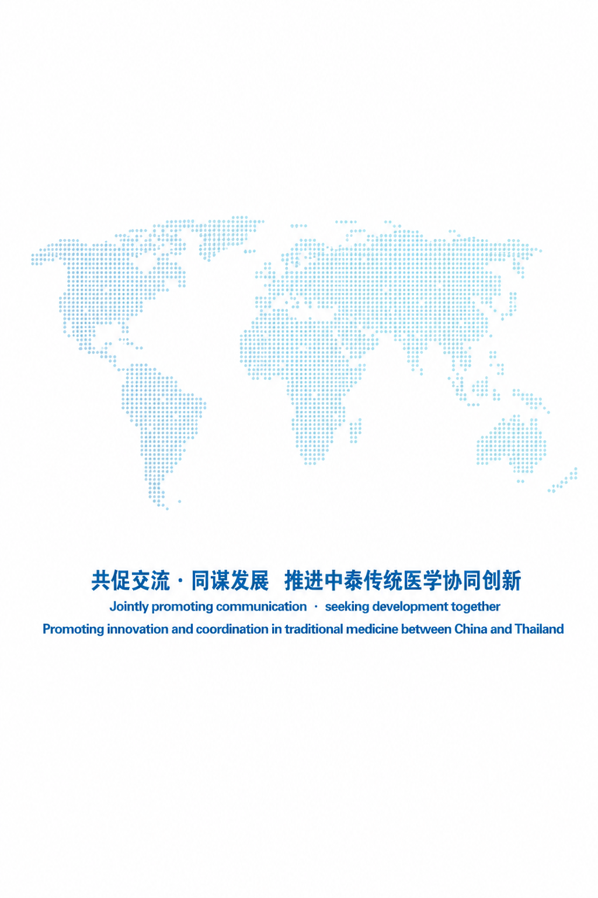
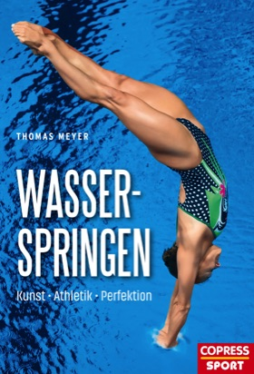

A new Approach to Ashi Point Acupuncture
Journal publication
Meyer, T. (2025). A new Approach to Ashi Point Acupuncture. Journal of Acupuncture and Herbs. JAH-Volume 6, Issue 3, S. 44–51. Sweden.
Dr. phil. Thomas Meyer hat mehrere praxisorientierte Fachbücher veröffentlicht, die sich an Therapeuten, Trainer, Sportler und Lehrkräfte richten.

Journal publication
Meyer, T. (2025). A new Approach to Ashi Point Acupuncture. Journal of Acupuncture and Herbs. JAH-Volume 6, Issue 3, S. 44–51. Sweden.
Workshop
Meyer, T. (2025). A new Approach to Ashi Point Acupuncture. Workshop. In: 2025 WFAS International Acupuncture-Moxibustion Symposium, 19.–21.09.2025. Stockholm, Sweden.

Conference paper
Meyer, T. (2024). Effects of superficial Acupuncture of tensioned subcutaneous connective tissue spots at symptoms area. In: WFAS 2024 International Symposium on Acupuncture-Moxibustion in London, UK, Paper Collection, S. 79.
Conference paper
Meyer, T. (2024). Effects of superficial Acupuncture of tensioned subcutaneous connective tissue spots parallel to the spine. In: WFAS 2024 International Symposium on Acupuncture-Moxibustion in London, UK, Paper Collection, S. 80.
Praxisworkshop
Meyer, T. (2024). Entspannungsbehandlung und Massagen in der sportpsychologischen Betreuung. Praxisworkshop. In: Methodenvielfalt: Lebendigkeit in Theorie und Praxis. 56. Jahrestagung der asp, 09.–11.05.2024. Berlin.

Workshop
Meyer, T. (2023). Finding and Acupuncture Ashi Points by palpation of subcutaneous connective tissue. Workshop. In: The 1st Seminar on Chinese-Thai Traditional Medicine. Chiang Mai University, 16.11.2023.
Single case documentation
Meyer, T. (2023). Acupuncture Ashi Points by palpation of subcutaneous connective tissue integrated in Physical Therapy. Single case documentation. In: WFAS 2023 International Symposium on Acupuncture-Moxibustion in Bangkok, Thailand, Paper Collection, S. 74–88.
Conference abstract
Meyer, T. (2022). Back to the roots – Palpation and Acupuncture Ashi Points. In: Promotion of TCM Acupuncture, Protecting Global Health. Abstract Band of the Tenth General Assembly and 2022 World Conference on Acupuncture-Moxibustion of World Federation of Acupuncture-Moxibustion Societies, S. 47 f. Singapore.
Conference contribution
Meyer, T. (2019). Discovering and Acupuncture Ashi points parallel to the spine. In: World Congress of World Federation of Acupuncture-Moxibustion Societies, 14.–17.11.2019, Antalya-Belek, Turkey. Abstract Book, S. 52.
Video Poster
Meyer, T. (2018). Acupuncture Ashi points parallel to the spine using palpation of connective tissue as a 'test'. Video Poster. Dialogue Mondial Scientifique et Culturel. World Congress of World Federation of Acupuncture-Moxibustion Societies, 16.–17.11.2018, Paris.
Sino German health promotion concepts
Meyer, T. (2013). Evaluation of Self Regulation. Sino German health promotion concepts. The Third World Education Congress of Chinese Medicine Societies, 08.–10.11.2013. Paper Collection, S. 191–194. Nanjing University of Chinese Medicine, P. R. China.
Conference abstract
Meyer, T. (2013). Training zur psychophysischen Regulation im Sport. In Stoll, O., Lau, A. & Moczall, S. (Hrsg.), Angewandte Sportpsychologie. Abstractband zur 45. asp-Jahrestagung, S. 192. Hamburg: Czwalina-Verlag.
Protokoll einer ad hoc Intervention eines abstiegsbedrohten Fußballzweitligisten
Meyer, T. (2013). Vom Erstkontakt zum Mentalen Mannschaftstraining in 3 Tagen? Protokoll einer ad hoc Intervention eines abstiegsbedrohten Fußballzweitligisten. In Stoll, O., Lau, A. & Moczall, S. (Hrsg.), Angewandte Sportpsychologie. Abstractband zur 45. asp-Jahrestagung, S. 110. Hamburg: Czwalina-Verlag.
Can this be used for acupuncture science?
Meyer, T. (2012). The findings of connective tissue as a test. Can this be used for acupuncture science? In Braun, M., Akupunktur-Moxibustion-Report 2009. Bericht vom Akupunktur-Weltkongreß 2009 in Straßburg. Schwarzach Verlag.
A method of direct teaching
Meyer, T. (2011). Integration of the findings of palpation of connective tissue in chinese medicine education as a method of direct teaching. The Second World Education Congress of Chinese Medicine Societies, 29./30.10.2011. Paper Collection, S. 161–162. Beijing University of Chinese Medicine, P. R. China.
Behandlung von Schwangeren und Adipösen in Bauchlage
Meyer, T. (2011). Massageliege mit Bauchausschnitt. Behandlung von Schwangeren und Adipösen in Bauchlage. In: Praxis Physiotherapie 3-11, S. 158 ff. Dortmund: Borgmann Media.
Conference abstract
Meyer, T. (2009). Entspannung und Aktivierung durch freie Gelenkbewegungen. In Alfermann, D. et al. (Hrsg.), Menschen in Bewegung. Sportpsychologie zwischen Tradition und Zukunft. Abstractband zur 40. asp-Jahrestagung. Hamburg: Czwalina-Verlag.
Wege zu einer individuellen psychophysischen Regulationskompetenz
Burkhard, H. & Meyer, T. (2007). Entspannungstraining im Schulsport. Wege zu einer individuellen psychophysischen Regulationskompetenz. Lehrhilfen für den Sportunterricht. Schorndorf: Karl Hofmann.
Erarbeitung und Evaluierung eines psychophysischen Regulationstrainings
Meyer, T. (2006). "Neues" Entspannungstraining im Sport. Erarbeitung und Evaluierung eines psychophysischen Regulationstrainings. Dissertation, Universität Karlsruhe (TH).
Conference abstract
Meyer, T. (2005). Neues Entspannungstraining im Sport. In Harald Seelig, Wiebke Göhner & Reinhard Fuchs (Hrsg.), Selbststeuerung im Sport. Abstractband zur 37. asp-Jahrestagung. Schriften der Deutschen Vereinigung für Sportwissenschaft, Band 147, S. 134 f. Hamburg: Czwalina-Verlag.
Journal article
Meyer, T. (1997). Zur Integration psychosozialer Aspekte in die Physikalische Therapie. Physikalische Therapie in Theorie und Praxis 11/1997, S. 683 ff. Hamburg: VPT Informations- und Fortbildungsservice GmbH.

Athletik bis zur Perfektion
Das Buch behandelt Wasserspringen als technisch und athletisch anspruchsvolle Sportart. Es richtet sich an Trainer, Athleten und sportlich Interessierte, die Grundlagen, Trainingsaspekte und die Entwicklung sportlicher Präzision im Wasserspringen vertiefen möchten.
Vollständige Literaturangabe: Meyer, T. Wasserspringen. Athletik bis zur Perfektion. München: Copress.

Prävention, Entspannung, Aktivierung
Das Standardwerk zur Sportmassage in der 4., erweiterten Auflage. Es beschreibt systematisch alle klassischen und sportspezifischen Massagetechniken, erläutert physiologische Wirkungsmechanismen und zeigt den praktischen Einsatz in Prävention, Regeneration und Aktivierung. Richtet sich an Masseure, Physiotherapeuten, Trainer, Sportlehrer und sportlich Aktive.
Vollständige Literaturangabe: Meyer, T. (2017). Sportmassage. Prävention, Entspannung, Aktivierung. 4. erw. Aufl. München: Copress.

Ein Nachschlagewerk für Betreuer und Athleten
100 kompakt dargestellte Prinzipien aus der Sportpsychologie – praxisnah formuliert und direkt anwendbar. Richtet sich an Trainer, Betreuer und Athleten, die ihre mentale Leistungsfähigkeit und ihren Umgang mit Wettkampfsituationen verbessern möchten.
Vollständige Literaturangabe: Meyer, T. (2011). Sportpsychologie – die 100 Prinzipien. München: Copress.

Regulation durch freies Bewegen. Für Aktive, Trainer, Lehrer und Therapeuten.
Ein praxisorientiertes Handbuch zum Entspannungstraining im Sportkontext. Beschreibt Techniken und Methoden zur Regulation durch Bewegung – für Sportler, Trainer, Lehrer und Therapeuten. Erschienen in der bewährten Schriftenreihe Praxisideen des Hofmann Verlags.
Vollständige Literaturangabe: Meyer, T. (2006). Entspannungstraining im Sport. Regulation durch freies Bewegen. Für Aktive, Trainer, Lehrer und Therapeuten. Schorndorf: Hofmann.
Lehrfilm zur Bindegewebsdiagnostik von Dr. phil. Thomas Meyer (Vimeo).
Video: Bindegewebsdiagnostik · Thomas Meyer · Vimeo